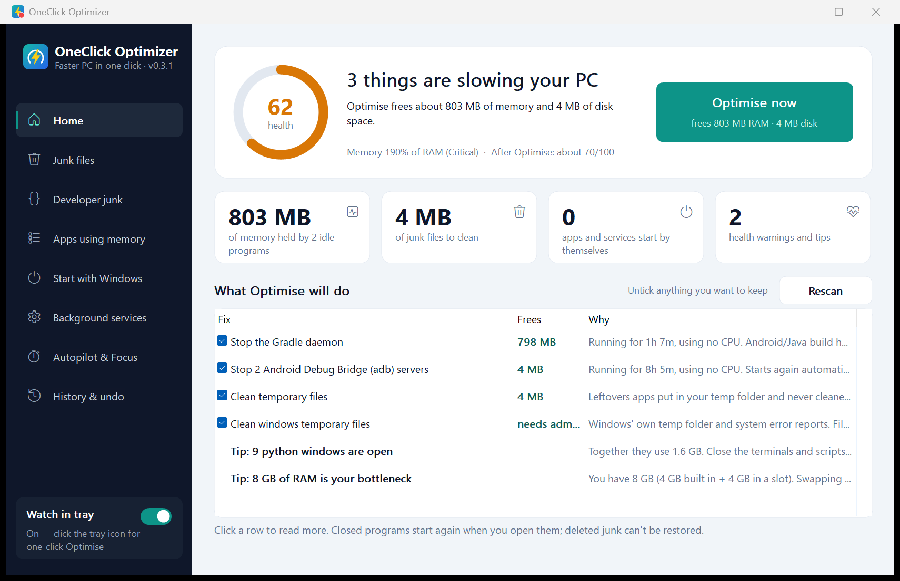

Find what slows your PC down, and fix it in one click.
OneClick Optimizer finds the idle build daemons, forgotten dev servers, old node_modules folders and junk files that fill an 8 GB laptop. It says what each one is, and fixes it when you tell it to. Every change is listed, and settings changes can be undone.
The app isn't code-signed yet, so Windows may say it protected your PC. Choose More info, then Run anyway. It installs just for you, with no admin prompt.

Measured on a real laptop
An everyday developer laptop: of RAM, CPU threads, . When we measured, its programs had reserved on of RAM, so Windows was moving memory to disk to keep up. Measured ; how we measured is at the end of this section.
Focus mode: one task, busy background
Seconds to finish the same task. Lower is better.
Show as a table
Junk files on this laptop
One-click Optimise ticks only what is safe to delete. Everything else is listed, and you decide.
Ticked by defaultYour call
Show as a table
Memory one click would free right now
Programs sitting idle that start again by themselves the next time you need them.
Show as a table
One click, earlier the same day
The tray watch noticed a Gradle daemon and 2 adb servers holding about 1.5 GB, all idle. One click in the tray panel closed them, deleted 1.3 GB of junk files and set 2 background services to start only when needed. That comes from the app's own log on this laptop (21 Oct 2026).
How we measured
- Everything here comes from
tools\bench.ps1in the repository. It runsoneclick-cli benchand measures the app itself. Run it on your own PC and you will get your own numbers; one laptop is not every laptop. - The scans are read-only. Developer junk sizes count real files and skip links. Sizes use binary units, like Windows Explorer (1 GB = 1024 MB).
- The app's memory is the private memory Windows reports for its processes. The window is measured idle and after a full scan, the tray watch after 10 seconds.
- Focus test: a single-threaded hashing task, timed alone, next to 2 busy programs per CPU thread, and next to the same programs after Focus mode's efficiency mode (EcoQoS plus below-normal priority) was applied to them. Each is the median of 5 runs. Only programs the test started itself were slowed, and the power mode was not changed.
- "Memory one click would free" is what the deep scan found idle at that moment. The field report comes from the tray watch's log.
What it does
One click, after you have seen the list
A scan takes about two seconds. It gives your PC a health score, and the Optimise button lists every change it will make before you press it. Untick anything you want to keep.
Optimise does
- Close programs that sit idle, like Gradle and Kotlin daemons, adb, and dev servers nobody is using
- Delete temp files older than 7 days, and crash dumps
- Stop apps that open at sign-in for no reason
- Set always-on background services to start only when needed
It never does
- Clean the registry, or "boost" RAM by flushing caches
- Close a Windows process or anything you are using
- Follow a link out of a folder it cleans
- Change anything without showing it to you first
Developer junk
It finds node_modules, Rust target, Gradle build folders, Python virtual environments, .NET bin/obj and the big package caches on every drive. Each comes with its size and the date the project last changed.
- A folder only counts when its project file sits next to it (
package.json,Cargo.toml...). That is checked again right before deleting. - Projects nobody changed for 30 days are ticked. Package caches never are.
- Windows, Program Files and AppData are never searched.

Autopilot and Focus mode
Autopilot cleans up on its own, daily or weekly, once your PC has been idle for 5 minutes. It deletes old temp files and closes build daemons that sat idle for 30 minutes with nothing connected to them. It never asks for admin rights, and anything it closes goes into History. You can mark a program "never close".
Focus mode gives the apps you are using the whole machine. Busy background programs go into Windows' efficiency mode and the power mode switches to Best performance. Turn it off and everything goes back.

A tray watch that stays out of the way
The tray icon changes colour with memory pressure. Click it for a small panel with your biggest apps, what one click will do, and a Focus mode switch. It uses about of memory.
It only speaks up when it matters: memory almost full for two minutes, idle dev tools, a new version. It stays quiet while you present or play full-screen.

Free, with an optional Pro
Pro is not on sale yet, so right now every feature below is free. When it launches, Pro will be a one-time $10, with no subscription and no account. Scanning, every detail page and undo stay free for good.
| Feature | Free | Pro ($10 once) |
|---|---|---|
| Scan and fix one by onehealth score, junk files, startup apps, services, undo | Yes | Yes |
| One-click Optimisein the app and from the tray | 3 times | Unlimited |
| Developer junknode_modules, build folders, package caches | See it | Clean it |
| Autopilotclean-ups that run on their own | — | Yes |
| Focus modefull power for the apps you use | — | Yes |
What leaves your PC
The app has no analytics, no ads and no account. It checks GitHub for a new version, which, like any web request, shows your IP address to GitHub. Once Pro is on sale, activating a key sends that key and an anonymous PC tag to the store, never your PC name. Scans, history and settings stay in %LOCALAPPDATA%\OneClickOptimizer.
Download
Windows 10 or 11, 64-bit. About . The app checks for updates itself and asks before installing one.
- OneClickOptimizer-Setup.exeInstaller: Start menu, optional desktop shortcut and tray watch, uninstall from Settings
- OneClickOptimizer.exeThe same app, portable: runs without installing
- oneclick-cli.exeCommand line:
scan,dev,bench,history - SHA256SUMS.txtChecksums. The app checks updates against them before running anything.